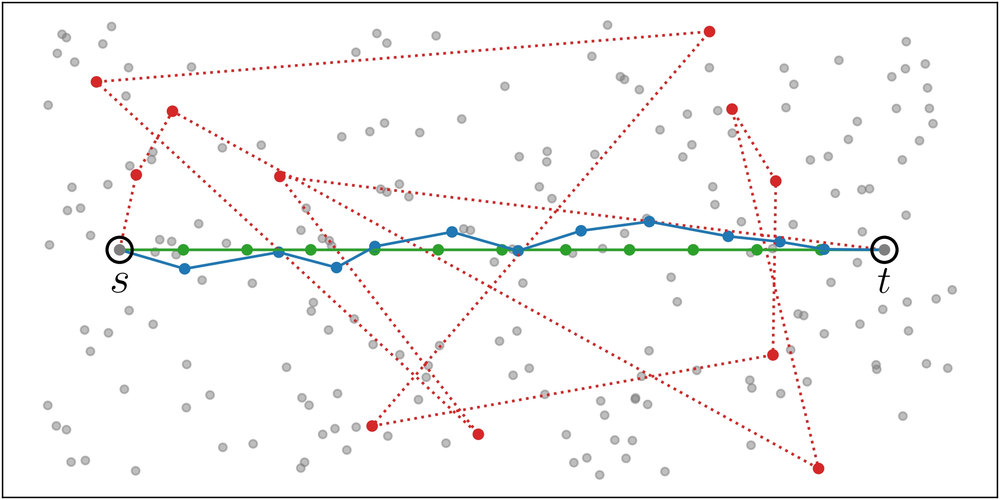
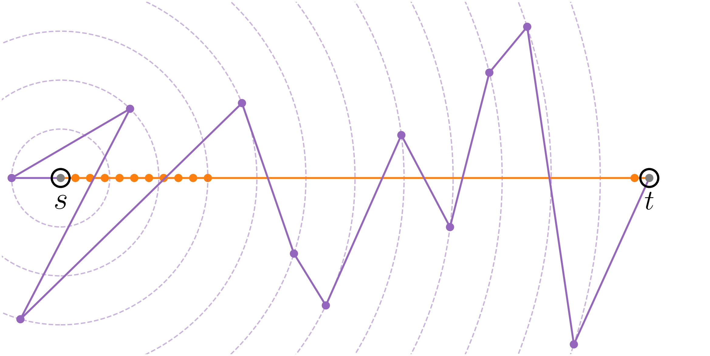

Théo Chasle Cauchy, Modan Tailleur, Barbara Pascal, Fanny Roche, Mathieu Lagrange
Contact: theo.chasle-cauchy@ls2n.fr
This is the companion page for the paper: Sobolev Norms in Neural Embeddings Measure Audio Morphing Regularity
Experiment code is available in this GitHub repository.
In the defined hypercube, the synthesizer produces a metal-like sound for log(
By choosing the minimum or maximum values for each parameter, you can listen to the extrema of the hypercube:
log(ω) = 3.40, τ = 0.34, log(p) = -0.82, log(D) = -1.43, α = 0.32
log(ω) = 3.40, τ = 0.34, log(p) = 0.30, log(D) = -1.43, α = 0.32

Reference trajectories are synthesized with a regularly sampled linear interpolation between anchors' log(p) values (other parameters have the same values between s and t).
To listen to the anchors s and t and the sounds of the morphing trajectory, click on the circles below:
Null trajectories are synthesized with tuples of parameters randomly sampled in the hypercube.
To listen to the anchors s and t and the sounds of the morphing trajectory, click on the circles below:

NUC trajectories are synthesized with a non-uniform linear interpolation between anchors' log(p) values.
To listen to the anchors s and t and the sounds of the morphing trajectory, click on the circles below:
EQC trajectories are synthesized with parameters such that the distance to the source is the same as in the ideal trajectory but the angle is randomly sampled.
To listen to the anchors s and t and the sounds of the morphing trajectory, click on the circles below: